NOCHE DE
3 de Octubre de 2019

¿Qué es la Noche
de Datos?
Bogotá es una ciudad generadora de datos que busca mejorar el acceso de la información para que
todos podamos entender lo que sucede en nuestro territorio y su comportamiento.
Por esta razón nace Noche de Datos, un espacio en donde expertos y usuarios intercambiarán ideas
sobre cómo
buscar, interpretar y analizar los datos en la capital.
En este encuentro, se reconoce la existencia e importancia del uso de los datos y su potencial,
para que los ciudadanos, entidades y empresas se apropien de la información proporcionada por la
Infraestructura de
Datos Espaciales de Bogotá.

DATOS
PARA
TODOS
3 de Octubre de 2019
5:30 a 8:00 p.m.
Maloka, Centro Interactivo
Cra 68D No 24A - 51 Bogotá, Colombia
Regístrate